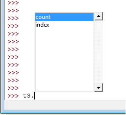

Esta obra esta protegida bajo una licencia de creative commons
Universidad de Antioquia
2010
La TUPLA es otro tipo de arreglo que dispone el Python. Esta variable está más cerca al concepto matemático de vector, puesto que en Python la tupla se maneja como una lista más cerrada porque no puede cambiar elementos individuales, en otras palabras, es inmutable según lo definen los manuales (Docs Python, 2011a). Veamos cómo se genera una tupla y esta característica en un ejemplo:
>>> t1 = 1, 3, 5
>>> t1
(1, 3, 5)
>>> t2 = ('salud', 'dinero', 'amor', 1, 2, 3)
>>> t2
('salud', 'dinero', 'amor', 1, 2, 3)
>>> t1[0]
1
>>> t1[0]= 5
Traceback (most recent call last):
File "<pyshell#12>", line 1
t1[0]= 5
TypeError: 'tuple' object does not support item assignment
>>>
Se generan las tuplas t1 y t2, la primera solo separando elementos con comas y la segunda usando paréntesis para encerrar los elementos de la tupla. Los índices se usan igual a las listas, pero al intentar asignar la posición 0 de t1 aparece un error de asignación no soportada ('tuple' object does not support item assignment), es el concepto de inmutabilidad.
También se muestra que es posible tener elementos de diferente tipo en las tuplas y de manera natural se pueden generar tuplas multidimensionales tal como se describió en las listas. Veamos el ejemplo:
>>> t3 = (t1, t2)>
>>> t3
((1, 3, 5), ('salud', 'dinero', 'amor', 1, 2, 3))
>>> t3[0][2]
5
>>> t3[1][1]
'dinero'
>>>
La tupla t3 contiene 2 tuplas y es posible acceder a cualquiera de los datos usando los índices multidimensionales de manera similar a las listas.
Los arreglos tipo tupla cuentan con menos métodos que las listas, como lo muestra la siguiente imagen

>>> t3
((1, 3, 5), ('salud', 'dinero', 'amor', 1, 2, 3))
>>> t3.count(1)
0
>>> t2.count(1)
>>>1
>>> t3.count((1,2,3))
0
>>> t3.count((1,3,5))
1
>>>
El método count en las tuplas funciona similar al caso de las listas, cuenta los elementos dentro de la tupla que son iguales al argumento. Pero se debe tener especial atención cuando tenemos elementos que son tuplas, ya que compara el elemento completo y no lo que tienen dentro, como en la línea en que se usa count para t3 con el argumento 1, la respuesta es 0. Cuando se usa el argumento (1,3,5) sí se encuentra un elemento en t3 igual y su respuesta es 1.
>>> t1
(1, 3, 5)
>>> t1.index(1)
0
>>> t2
('salud', 'dinero', 'amor', 1, 2, 3)
>>> t2.index(1)
3
>>> t3.index((1,3,5))
0
>>>
El método index en las tuplas encuentra en qué índice está el elemento igual al argumento, aquí el elemento 1 está en el índice 0 de la tupla t1 y en el índice 3 de la tupla t2. De igual forma (1,3,5) está en el índice 0 de la tupla t3.
La tuplas como son arreglos más cerrados, ya que no permiten cambiar directamente sus elementos, sí tienen un mecanismo de desempacado (en inglés unpack) mediante la asignación de sus elementos a variables independientes para cada elemento. Veamos en el siguiente ejemplo como asignar nuevas variables a cada elemento de la tupla:
>>>t3
((1, 3, 5), ('salud', 'dinero', 'amor', 1, 2, 3))
>>> A,B = t3
>>> A
(1, 3, 5)
>>> B
('salud', 'dinero', 'amor', 1, 2, 3)
>>> a,b = A
Traceback (most recent call last):
File "<pyshell#9>", line 1
a,b = A
ValueError: too many values to unpack
>>> a,b,c = A
>>> print a,b,c
1 3 5
>>>
Aquí los dos elementos de la tupla t3 se asignan a las variables A y B. Al intentar desempacar A devuelve un mensaje de error informando que existen más valores para desempacar (too many values to unpack) mostrando que se deben tener un número de variables igual a la cantidad de elementos para asignar, como en este caso con a, b y c.
Esta obra esta protegida bajo una licencia de creative commons
Universidad de Antioquia
2010